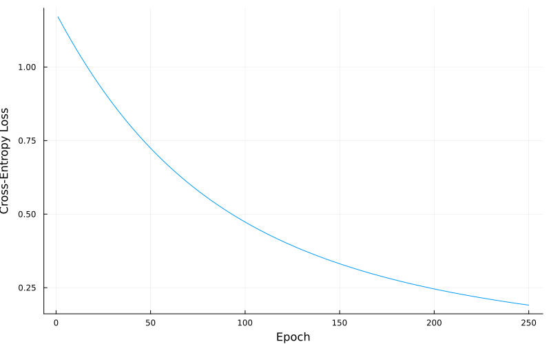
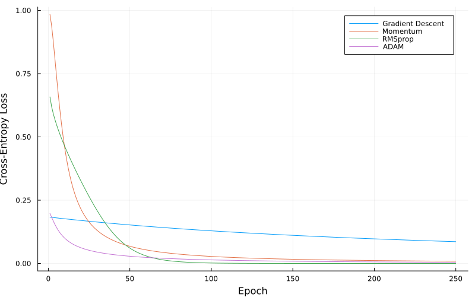
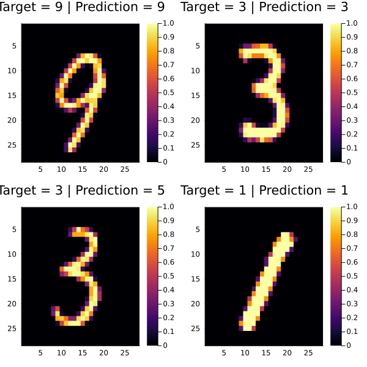

using LinearAlgebra, Distributions, Plots, Random, Zygote, MLDatasets
include("/Users/michal/Code/simple_nn/simple_nn.jl")
Random.seed!(69420);simple_nn Demo
simple_nn is a simple neural network framework that allows users to quickly define their network architecture and write their own loss functions and training methods. The source code for this framework can be found at MichaszJ/simple_nn.
XOR Problem
A simple example of using this library is to solve the XOR problem.
Defining data and targets:
data = [
[0.0, 0.0],
[0.0, 1.0],
[1.0, 0.0],
[1.0, 1.0]
]
targets = [
[0.0, 1.0],
[1.0, 0.0],
[1.0, 0.0],
[0.0, 1.0]
];Defining network and training optimizer:
xor_setup = [
((2, 2), dense_layer, sigmoid_activation),
((2, 2), dense_layer, sigmoid_activation)
]
xor_net = CreateNetwork(xor_setup, datatype=Float32, init_distribution=Normal())
OptimizerSetup!(xor_net, GradientDescentOptimizer!, learning_rate=0.01)Dict{String, Any} with 3 entries:
"optimizer" => GradientDescentOptimizer!
"optimizer_name" => "GradientDescentOptimizer!"
"learning_rate" => 0.01Training routine:
epochs = 250
loss = 0.0
losses = []
cross_entropy_loss(x_in, y_val) = -sum(y_val .* log.(Forward(xor_net, x_in)))
for epoch in 1:epochs
for (i, input) in enumerate(data)
x_in = convert(Vector{Float32}, input)
y_val = targets[i]
pred = Forward(xor_net, x_in)
loss = cross_entropy_loss(x_in, y_val)
Backward!(xor_net, cross_entropy_loss, x_in, y_val)
if epoch % 50 == 0 && i == length(targets)
println("Epoch $epoch\tPred: $(round(maximum(pred), digits=4))\tTarget: $(maximum(y_val))\tloss: $(round(loss, digits=4))")
end
end
push!(losses, loss)
end
preds = round.(maximum.([Forward(xor_net, convert(Vector{Float32}, x)) for x in data]))
passed = preds .== convert(Vector{Float32}, maximum.(targets))
println("\n$(sum(passed))/4 tests passed | Accuracy $(100 * sum(passed) / length(targets))%")Epoch 50 Pred: 0.6136 Target: 1.0 loss: 0.7241
Epoch 100 Pred: 0.7266 Target: 1.0 loss: 0.4732
Epoch 150 Pred: 0.8019 Target: 1.0 loss: 0.3314
Epoch 200 Pred: 0.8514 Target: 1.0 loss: 0.2458
Epoch 250 Pred: 0.8847 Target: 1.0 loss: 0.1907
4/4 tests passed | Accuracy 100.0%Loss over time:
plot(losses, xlabel="Epoch", ylabel="Cross-Entropy Loss", label="", size=(800,500))
Comparing Optimizers
simple_nn has several training optimizers defined, with a simple interface to allow users to implement their own optimizers:
optimizers = [
GradientDescentOptimizer!,
MomentumOptimizer!,
RMSpropOptimizer!,
AdamOptimizer!
]
xor_networks = [CreateNetwork(xor_setup, datatype=Float32, init_distribution=Normal()) for i in 1:length(optimizers)]
for (i, opt) in enumerate(optimizers)
OptimizerSetup!(xor_networks[i], opt)
end
loss = []
losses = []
loss_funcs = [
(x_in, y_val) -> -sum(y_val .* log.(Forward(net, x_in))) for net in xor_networks
]
for epoch in 1:epochs
for (i, input) in enumerate(data)
x_in = convert(Vector{Float32}, input)
y_val = targets[i]
loss = []
for i in 1:length(optimizers)
push!(loss, loss_funcs[i](x_in, y_val))
Backward!(xor_networks[i], loss_funcs[i], x_in, y_val)
end
end
push!(losses, loss)
end
loss_gd = [loss[1] for loss in losses]
loss_mgd = [loss[2] for loss in losses]
loss_rms = [loss[3] for loss in losses]
loss_adam = [loss[4] for loss in losses]
plot(loss_gd, xlabel="Epoch", ylabel="Cross-Entropy Loss", label="Gradient Descent", size=(800,500))
plot!(loss_mgd, label="Momentum")
plot!(loss_rms, label="RMSprop")
plot!(loss_adam, label="ADAM")
MNIST
A more real-world example is the classification of handwritten digits, using the MNIST dataset:
train_x, train_y = MNIST.traindata()
train_x = Float32.(train_x)
test_x, test_y = MNIST.testdata()
test_x = Float32.(test_x);Defining some helper functions:
flatten(matrix) = vcat(matrix...)
function one_hot_encoding(target)
return Float32.(target .== collect(0:9))
endone_hot_encoding (generic function with 1 method)Defining the MNIST network and optimizer:
mnist_network = CreateNetwork([
((784, 128), dense_layer, sigmoid_activation),
((128, 64), dense_layer, sigmoid_activation),
((64, 10), dense_layer, softmax_activation)
], datatype=Float32, init_distribution=Normal())
OptimizerSetup!(mnist_network, MomentumOptimizer!, learning_rate=0.01)Dict{String, Any} with 6 entries:
"optimizer" => MomentumOptimizer!
"weights_momentum_vector" => [[0.0 0.0 … 0.0 0.0; 0.0 0.0 … 0.0 0.0; … ; 0.0 …
"optimizer_name" => "MomentumOptimizer!"
"learning_rate" => 0.01
"gamma" => 0.9
"biases_momentum_vector" => [[0.0, 0.0, 0.0, 0.0, 0.0, 0.0, 0.0, 0.0, 0.0, 0…Training routine:
epochs = 1000
loss = 0.0
losses = []
batch_size = 32
cross_entropy_loss(x_in, y_val) = -sum(y_val .* log.(Forward(mnist_network, x_in)))
for epoch in 1:epochs
batch_idx = rand((1:size(train_x, 3)), batch_size)
batch_x = train_x[1:end, 1:end, batch_idx]
batch_y = train_y[batch_idx]
for i in 1:batch_size
x_in = convert(Vector{Float32}, flatten(batch_x[1:end, 1:end, i]))
y_val = one_hot_encoding(batch_y[i])
pred = Forward(mnist_network, x_in)
loss = cross_entropy_loss(x_in, y_val)
Backward!(mnist_network, cross_entropy_loss, x_in, y_val)
end
push!(losses, loss)
endSample verification:
samps = rand(1:size(test_x, 3), 4)
test_preds = [
Forward(mnist_network, convert(Vector{Float32}, flatten(train_x[1:end, 1:end, samp]))) for samp in samps
]
preds = [findmax(pred)[2] - 1 for pred in test_preds]
plots = []
for (i, pred) in enumerate(preds)
temp = heatmap(
train_x[1:end, 1:end, samps[i]]',
yflip=true,
title="Target = $(train_y[samps[i]]) | Prediction = $pred",
)
push!(plots, temp)
end
plot(plots..., layout=(2,2), size=(600,600))
Overall accuracy:
test_predictions = argmax.([
Forward(mnist_network, convert(Vector{Float32}, flatten(test_x[1:end, 1:end, i]))) for i in 1:size(test_x, 3)
]) .- 1
test_correct = test_predictions .== test_y
println("Accuracy: $(round(100 * sum(test_correct) / length(test_correct), digits=2))%")Accuracy: 90.87%